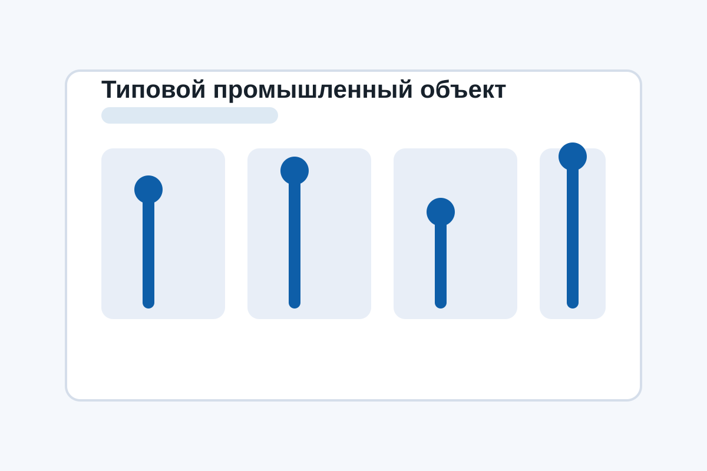

Более 20 лет практического опыта
Опыт охватывает объекты промышленности, инженерной инфраструктуры, агропромышленных комплексов и критически важных систем.
Работаем по Южному федеральному округу и по всей России. Берем в работу объекты, где электрические системы, системы управления, телеметрия и инженерная безопасность должны быть увязаны в один надежный комплекс.
Специализация — сложные многокомпонентные системы, требующие понимания нескольких инженерных разделов одновременно.
ПромАвтоматика Юг ориентирована на B2B-заказчиков, которым нужен не просто монтажный подрядчик, а технически сильный субподрядчик с пониманием нескольких инженерных разделов одновременно. Такой формат особенно востребован у генеральных подрядчиков, системных интеграторов, производителей промышленного оборудования, предприятий с вводом новых линий, аграрных комплексов, телеком-операторов, газовых компаний и муниципальных эксплуатирующих организаций.
Сайт ориентирован на компании, которым нужен надежный субподрядчик по промышленной автоматизации, электромонтажу и монтажу КИПиА в Южном федеральном округе.
Опыт охватывает объекты промышленности, инженерной инфраструктуры, агропромышленных комплексов и критически важных систем.
Фундаментальная база по приборам, автоматике, измерениям и логике технологического управления помогает видеть объект глубже монтажного уровня.
Это особенно важно на объектах, где требуется увязка шкафов, логики ПЛК, HMI, SCADA, телеметрии и диспетчеризации.
Работы выполняются с учетом взаимосвязи между силовой частью, автоматикой, безопасностью, связью и технологическим оборудованием.
Компания уверенно работает на стадиях, где важна не только сборка, но и выход системы в устойчивый режим эксплуатации.
При анализе документации выявляются коллизии, которые часто становятся причиной срыва сроков уже в ходе монтажа.
Это дает независимость при выезде на удаленные площадки и позволяет не терять время на организационные мелочи.
Есть возможность выполнять работы там, где еще не организовано стационарное электропитание и полноценная строительная инфраструктура.
Для генерального подрядчика важны дисциплина по срокам, исполнительная документация и прогнозируемое техническое качество. На это и построен рабочий процесс.

Компания участвует в проектах, где автоматизация не может существовать отдельно от электромонтажа, КИПиА и инженерной увязки. Это типичная ситуация для котельных, очистных сооружений, тепличных комплексов, дата-центров, газораспределительных объектов и производственных линий.
В такой конфигурации задача субподрядчика состоит не только в установке оборудования, но и в том, чтобы собрать работающую систему с понятной архитектурой, корректной кабельной инфраструктурой, правильно установленными приборами, надежной силовой частью и готовностью к последующему запуску.
Развернутое описание реализованных кейсов доступно на странице проектов. Подробные сценарии по профильным объектам вынесены в раздел типовых объектов.
Каждое направление можно привлекать отдельно, но наибольшую ценность компания дает там, где нужно увязать несколько подсистем в один инженерный результат.
Системы управления технологическим оборудованием, локальная автоматика, диспетчеризация, телеметрия и интеграция шкафного оборудования.
Кабельные трассы, щиты, силовые и контрольные кабели, подключения технологических механизмов и инженерных систем.
Установка датчиков, измерительных цепей, исполнительных устройств, шкафов автоматики и приборных линий.
Проверка сигналов, настройка логики, отработка аварийных сценариев, комплексное опробование и запуск объекта.
Работа на стыке силовых систем, автоматики, безопасности, телеметрии и диспетчерских контуров.
Поддержка генерального подрядчика или интегратора на участке, где требуется самостоятельная инженерная компетенция, а не только рабочая сила.
Основная зона работы компании сосредоточена в Южном федеральном округе, однако короткие и технически точечные проекты могут выполняться по всей России.
Промышленные площадки, логистика, АПК, теплоэнергетика, коммунальная инфраструктура, телеметрия и распределенные инженерные объекты.
Производственные комплексы, аграрные объекты, складская и холодильная инфраструктура, коммерческая инженерия и автоматика котельных.
Пищевое производство, газовая отрасль, агропром, насосные станции и объекты с высокой долей полевого оборудования.
Промышленность, энергетика, водоканал, производственные линии и инженерные узлы с развитой системой учета и контроля.
Газовая инфраструктура, портовые и логистические площадки, распределенные коммуникации, автоматика насосных и очистных объектов.
Отправьте проектную документацию, спецификацию или краткое техническое описание. Мы оценим состав работ, инженерные риски и удобный формат взаимодействия по объекту.
Перейти в контакты · Посмотреть порядок работы · Изучить технические статьи